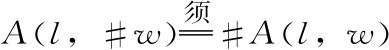
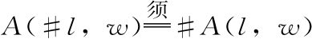
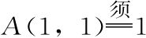
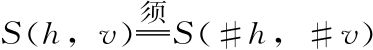
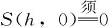
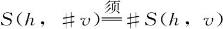
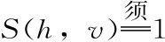
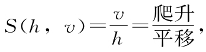

最后，让我们用符号形式总结发明的过程，回顾我们做了什么。
发明面积
根据我们对面积的日常观念，我们要求相应的数学概念具有以下两个性质，以矩形为例：
1.对任意数＃，

。2.对任意数＃，

。3.

。然后我们发现这使得矩形的面积为
A（l，w）=lw，
这正是他们在数学课上扔给我们的公式。
发明陡峭度
根据我们对陡峭度的日常观念，我们要求相应的数学概念具有以下五个性质，以直线为例：
1.陡峭度只取决于垂直位置的变化和水平位置的变化，而不是位置本身。
2.对任意数＃，

。3.我们要求水平直线的陡峭度为0，即

。4.如果将垂直距离加倍，不改变水平距离，则陡峭度也应当加倍。同样，不仅仅是加倍，对于任意的放大倍数，这个属性都应当成立，因此对任意数＃，

。5.当h=v，纯粹出于美学原因，我们令

。然后我们发现这5条要求一起迫使直线的陡峭度为

这正是他们在数学课上扔给我们的公式。